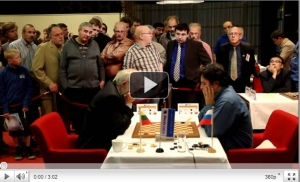
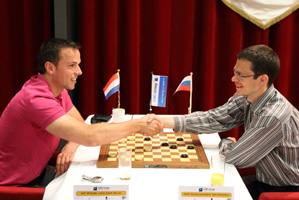
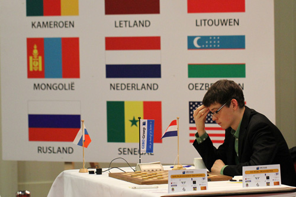

Laatste ronde werd zenuwenslag
Paul Oudshoorn, 29 mei 2011.
De laatste ronde van het wereldkampioenschap is alles behalve een formaliteit geworden. Om de overige podiumplaatsen werd volop gestreden. De verwachting was, dat vooral het gevecht om de derde plaats interessant zou worden, want Schwarzman had Boezjinski op het menu staan en hij gaf in de vroege morgen al aan, dat hij twee punten wenste te halen, na wat aanstekelijke peptalk van explicateur Hein Meijer in de spelersbus die naar Urk voer.
Schwarzman speelde zijn laatste partij als regerend kampioen en deed dat in stijl. Het werd een buitengewoon origineel gevecht waarin hij een originele en subtiele strategie losliet op de Litouwer, die vocht voor wat hij waard was. De klasse van Schwarzman scheurde zijn verdediging en er kwam een moeilijk eindspel op het bord. Schwarzman stond daarin meerdere keren gewonnen, maar zelfs hij wist de juiste weg niet te vinden. Uiteindelijk bereikte Boezjinski een benauwde remise.
Georgiev wereldkampioen
Paul Oudshoorn, 28 mei 2011.
Na het winnen van het sterkst bezette damkampioenschap van 2011 het Russisch kampioenschap heeft Alexander Georgiev ook het belangrijkste kampioenschap van 2011, het wereldkampioenschap gewonnen.
Georgiev ging totaal niet gebukt onder zijn favorietenrol. Hij was de enige speler die er elke ronde vol in vloog. Deze ronde was een uitzondering hij had maar een punt nodig om feest te kunnen vieren.Wiebe van der Wijk was niet in staat om het hem echt lastig te maken, na een paar uur spelen kon hij Georgiev als eerste met zijn 5e wereldtitel te feliciteren.
Wiebe van der Wijk (links) feliciteert Alexander Georgiev
WK harde leerschool voor Boomstra
Bert Dollekamp, 29-05-2011, Dagblad van het Noorden.
Urk Roel Boomstra heeft zijn debuut bij het WK dammen met een zevende plaats afgesloten. De 18-jarige Emmenaar heeft het hele toernooi volgens plan bovenin meegedraaid, maar keek alweer vooruit. “Er is werk aan de winkel voor mij”, concludeerde hij nuchter. “Ik was op de beslissende momenten gewoon niet goed genoeg”.
Bij winst in de slotronde van afgelopen zaterdag op Alexander Georgiev had Boomstra alsnog een vijfde plaats en toegang tot het volgende WK verdiend. Maar de nieuwe wereldkampioen voelde er weinig voor om de Nederlander in het zadel te helpen en hield de boot af. Boomstra was realist genoeg om te beseffen dat hij geen ijzer met handen kon breken en berustte na 40 zetten in de onvermijdelijke remise.
Roel Boomstra
Website statistieken
Geb Kos, 29 mei 2011.
Meer dan 25.000 personen hebben de afgelopen maand de website bezocht. Zij waren goed voor meer dan 126.000 bezoeken.
De meeste bezoekers kwamen uit Nederland, op afstand gevolgd door Brazilië. Op de speeldagen keken meer dan 3000 personen per dag, dit is een verdubbeling ten opzichte van vorige wk's en nk's.
Georgiev geruisloos naar wereldtitel
 Dagblad van het Noorden, 27 mei 2011.
Dagblad van het Noorden, 27 mei 2011.
Urk – Al in de voorlaatste ronde heeft Alexander Georgiev de wereldtitel dammen veilig gesteld. De 35-jarige grootmeester uit St. Petersburg nam in het zicht van de haven geen enkel risico meer en werd met een geruisloze remise tegen Wiebe van der Wijk onbereikbaar voor zijn concurrenten.
De Nederlandse kansen op eremetaal zijn inmiddels tot een minimum geslonken. Roel Boomstra leek na de ontsnapping tegen Tsjizjov, de dreun van Schwarzman en een povere remise met hekkensluiter Artykov het lek boven te hebben.
De Rus Getmanski werd helemaal zoek gespeeld, maar op het moment surpreme miste de Emmenaar een prachtige combinatieve forcing en moest met een plusremise genoegen nemen. Bij winst in de slotronde maakt Boomstra nog steeds kans op de vijfde plaats die deelname aan het volgend WK verzekert. Het voornaamste probleem zit vandaag tegenover hem: de nieuwe wereldkampioen.
Wereldkampioenschap Cloud Computing
Alleen de beste spelers vanuit de hele wereld worden uitgenodigd om deel te nemen aan het wereldkampioenschap. Heel de wereld kan meekijken naar de wedstrijden die over een periode van een maand worden gespeeld. Het strijdtoneel van twee spelers bevindt zich fysiek in Nederland, maar is ook virtueel via internet te volgen. We hebben het hier over het WK dammen, maar ook over de Cloud omgeving die het mogelijk maakt dat kijkers wereldwijd live de partijen kunnen volgen.
 Terwijl het WK Dammen zich afspeelt in Emmeloord en op Urk, worden de partijen live via internet gevolgd door liefhebbers uit de hele wereld. Het hoge aantal bezoekers stelt hoge eisen aan de servers die dit moeten verwerken. Omdat het evenement slechts een maand duurt was de aanschaf van de benodigde servers niet haalbaar wegens de grote investeringen die hiermee gemoeid zouden zijn. Samen met Previder werd een oplossing gevonden; hosting in de Cloud.
Terwijl het WK Dammen zich afspeelt in Emmeloord en op Urk, worden de partijen live via internet gevolgd door liefhebbers uit de hele wereld. Het hoge aantal bezoekers stelt hoge eisen aan de servers die dit moeten verwerken. Omdat het evenement slechts een maand duurt was de aanschaf van de benodigde servers niet haalbaar wegens de grote investeringen die hiermee gemoeid zouden zijn. Samen met Previder werd een oplossing gevonden; hosting in de Cloud.
2 miljoen hits per uur.
Georgiev langs afgrond op WK koers
Bert Dollekamp, 21-05-2011, Dagblad van het Noorden.
Urk – Terwijl Alexander Georgiev langs afgronden op zijn vijfde wereldtitel aankoerst, komt Roel Boomstra de laatste dagen moeilijk tot scoren. De Emmenaar staat nog derde, maar zal in de slotweek voluit moeten gaan voor de begeerde podiumplek.
Het loopt zaterdagmiddag tegen de klok van vijf. Roerloos zit Alexander Georgiev achter het bord. Maar zijn brein draait in de hoogste versnelling, zijn hart bonst in de keel en de adrenaline spuit door zijn lijf.
Burgemeester Jaap Kroon verslaat schoolkampioen Riekelt de Boer
 Piet Bouma, 24-05-2011.
Piet Bouma, 24-05-2011.
Belofte maakt schuld. Tijdens de schoolkampioenschappen van Urk op 29 december vorig jaar beloofde burgemeester Jaap Kroon dat hij een echte partij tegen de schoolkampioen wilde spelen. Wat is mooier om dat tijdens het WK op Urk te doen. Burgemeester Kroon had al eerder in een interview prijsgegeven dat hij vroeger een verwoed thuisdammer was. Dat bleek tijdens de partij, die door de volledige klas van Riekelt van de Groen van Prinsterschool (met heuse spandoeken) werd bijgewoond.
En natuurlijk werd deze partij net als bij de “echte toppers” op een elektronisch dambord gespeeld, waarbij op een grote monitor de zetten goed te volgen waren. De burgemeester had zich serieus voorbereid en wist in een fraaie partij maar liefst twee keer een damzet te nemen. Riekelt kon de beide dammen wel weer van het bord halen, maar in het eindspel bleek, ondanks de verwoede steunbetuigingen van zijn klasgenoten, het materiaalvoordeel van de burgemeester te groot. Een derde dam was beslissend.
Uitnodiging sluitingsceremonie

Namens Stichting Aanzet nodig ik u graag uit om de sluitingsceremonie van het GIBO Groep WK Dammen 2011 bij te wonen. De sluiting vindt plaats op 28 mei 2011 om 17.00 uur in Party & Events De Koningshof, Staartweg 20, 8321 NB op Urk. Uiteraard zal de wereldkampioen deze middag op gepaste wijze worden gehuldigd.
Uw aanwezigheid wordt zeer op prijs gesteld.
Met vriendelijke groet namens Stichting Aanzet, IJsbrand Haven, voorzitter
Pokeren voor Dammers!
Pokeren voor Dammers!
Onze fanatieke dammers die ook geïnteresseerd zijn in pokeren zijn hier aan het goede adres. Uiteraard is het veel spannender een intensieve dam wedstrijd te spelen dan om te pokeren, maar heb je hier zin in, maar geen tijd een pokeravond te organiseren kan dit ook online worden gespeeld.
Kijk goed rond naar sites die de beste pokerspelletjes en de beste bonus aanbieden.
- Donderwolk boven Urk
- Russische beer zet Hollandse leeuw in zijn hemd
- Roel Boomstra strijdend ten onder
- Ernstige fouten zorgen voor veel beslissingen
- Ndjofang brengt Georgiev aan het wankelen
- Georgiev door het oog van de naald
- Listige overwinning van Dul
- Alex Boxum beste Flevolander in open sneldamkampioenschap
- Georgiev loopt uit
- Welk lokaas gebruikt Alexander Georgiev?
- Baljakin voegt zich bij achtervolgers
- Grootmeesters verdringen zich bij WK
- Tussensprint Georgiev
- Ochtendstond heeft goud in de mond
- De vis wil even niet bijten bij Boomstra
- Dramatische blunders in tijdnood in de avondronde
- Faire partie nulle de la matinée
- “Ik ben gewoon goed, anders was ik hier niet”
- Un sixième tour passionnant
- Presque pas de remise pendant le Championnat Mondial du Jeu de Dames
- Ton Sijbrands, dammer - met alle gevolgen van dien
- WK- gangers Huissen vallen in herhaling
- Tour sensationnel grâce à une combativité virulente
- Roel Boomstra trekt alle registers open
- La vraie lutte entre les joueurs s’éclate
- Les joueurs ne montraient aucune fatigue après un dimanche sans matchs
- Deynos WK Dammen 2011 actie
- GIBO Groep WK Dammen 2011 is begonnen.
- Eerste succesje Valneris
- Remises voor DV Huissen-trio op WK
- Programmaboekje GIBO Groep WK Dammen 2011
- Gantwarg en Valneris vervangen verlate Afrikanen
- ‘Reserve’ Valneris toch actief op WK dammen
- Roel Boomstra kan meteen aan de bak in WK
- Baljakin acht plaats bij top drie WK haalbaar
- Jonge Culemborger mag zich meten met de besten ter wereld
- Bulletin d’information Numéro 1
- WK Dammen 2011: Nog twee weken te gaan!
- Loting WK Dammen 2011
- Jean-Marc Ndjofang verslikt zich in wereldrecordpoging